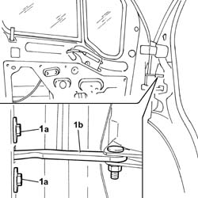
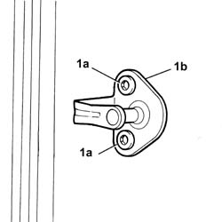
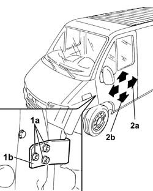

7005A14 FRONT SIDE DOOR - ADJUST CENTERING AND MOULDING - INCLUDES ADAPTATION OF HINGES AND SEALS ON DOOR COMPARTMENT
- Path
- Procedures > 70 FITTINGS > 7005 PASSENGER COMPARTMENT FRONT SIDE DOORS > 7005A LOCATION OF FRONT DOOR WIND NOISES > 7005A14 FRONT SIDE DOOR - ADJUST CENTERING AND MOULDING - INCLUDES ADAPTATION OF HINGES AND SEALS ON DOOR COMPARTMENT
- Kind
- repair procedure (removal / refitting; the operation number is the code)
- Applies to
- all engines; all production periods
- Interactive page
- https://sloeber94.github.io/elrnDB-fDct/en/#/244001419
Applies to: all engines; all production periods
1. Loosen the bolts (1a) fixing the door check strap (1b).

Applies to: all engines; all production periods
1. Loosen the bolts (1a) fixing the door striker (1b).

Applies to: all engines; all production periods
1. Loosen the bolts (1a) fixing the door hinges (1b), door side.
2. Adjust the door in lengthwise direction (2a) and vertical direction (2b) until the correct fitting position is achieved.

Applies to: all engines; all production periods
- When the adjustment is completed, proceed with tightening the bolts fixing the door side door hinges and the door lock striker bolts to torque.
 | Value - daNm | Fastening | Component | Ø |
|---|---|---|---|---|
. | 2,4 | - | STRIKER ON FRONT SIDE DOOR PILLAR | - |
| Value - daNm | Fastening | Component | Ø |
|---|---|---|---|---|
. | (door) 3 | Bolt | FRONT SIDE DOOR HINGES | M8 |
- Tighten the bolts fixing the door check strap to torque.
| Value - daNm | Fastening | Component | Ø |
|---|---|---|---|---|
. | (door) 1.2 | Bolt | FRONT DOOR OPENING LIMITER | M6 |